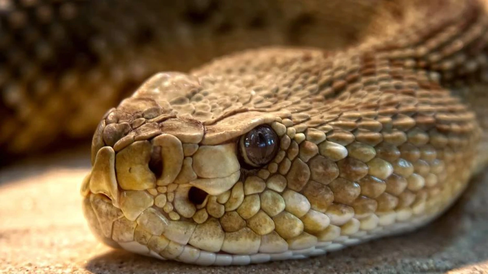
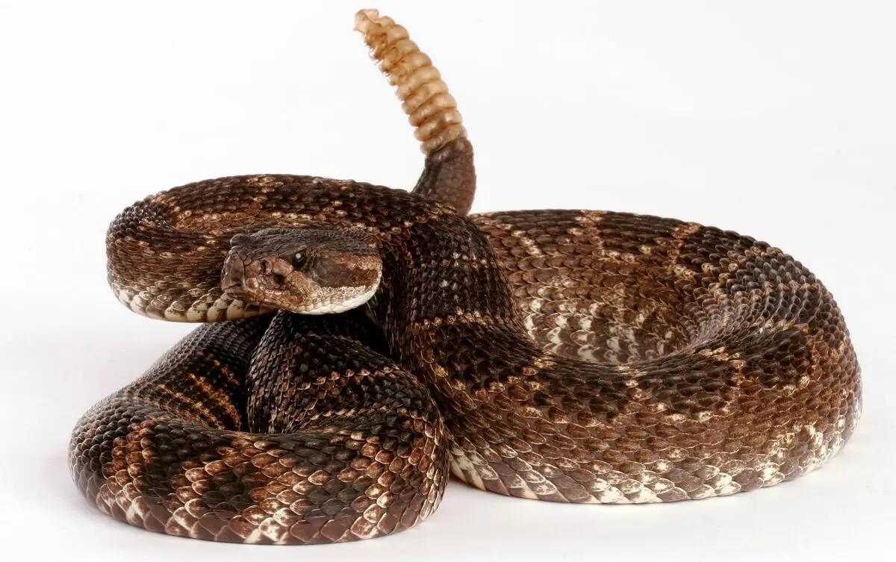

Cascavel ou cobra cascavel é o nome genérico dado às cobras peçonhentas dos géneros Crotalus e Sistrurus. As cascavéis possuem um chocalho característico na cauda, e estão presentes em todo o continente americano. Geralmente, refere-se mais especificamente à espécie Crotalus durissus, cuja área de distribuição se estende do México à Argentina.
A cascavel, por razões não bem entendidas, em vez de sair completamente de sua pele antiga, mantém parte dela enrolada na cauda em forma de um anel cinzento grosseiro. Com o correr dos anos, estes pedaços de epiderme ressecados formam os guizos que, quando o animal vibra a cauda, balançam e causam o ruído característico. Embora no conceito popular o número de anéis do guizo às vezes é interpretado como correspondente à idade desta cobra, isto não é correto, pois no máximo poderia indicar o número de trocas de pele.
